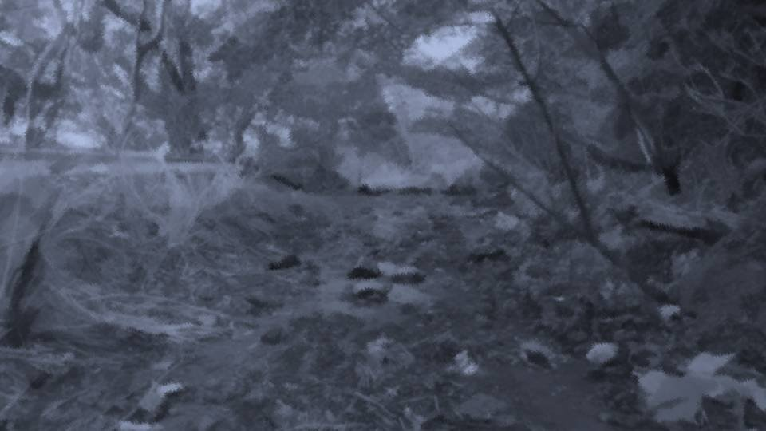

Script 00002164


「だったら、荒田集落に来て下さい」
「………… え？」
「桔梗殿のような女性こそ、荒田集落は求めています。 桔梗殿の夢と情熱は、きっと荒田集落の助けになる」
「………… 簡単に言ってくれますね。 それは私が家を捨て、家族を捨て―― 父上たちに恥をかかせることになります」
「………… え？」
「桔梗殿のような女性こそ、荒田集落は求めています。 桔梗殿の夢と情熱は、きっと荒田集落の助けになる」
「………… 簡単に言ってくれますね。 それは私が家を捨て、家族を捨て―― 父上たちに恥をかかせることになります」
「…………
そういうことですか……」

晃様はそう言って、再び腰を下ろす。
「桔梗殿には、大切に思うものがあるのですね。 そのために、夢をあきらめなくてはならない」
「そう……ですね……」
「桔梗殿には、大切に思うものがあるのですね。 そのために、夢をあきらめなくてはならない」
「そう……ですね……」
大切なもの――晃様の言うように、家族や家は大事だ。
しかし私が思っていたのは、この時代この場所の慣習に逆らえないということ。
大切なものを守ることとは、少し違う。
晃様には、どうしてもこの慣習が理解できないようだ。
しかし私が思っていたのは、この時代この場所の慣習に逆らえないということ。
大切なものを守ることとは、少し違う。
晃様には、どうしてもこの慣習が理解できないようだ。
「だけど俺にも、その気持ち分かります」
「え？」
「望まぬ相手と一緒にならないといけない。 その気持ち、俺にはよく分かります」
「え？」
「望まぬ相手と一緒にならないといけない。 その気持ち、俺にはよく分かります」
「…………
一体、私の何が分かるんですか？」
「俺には分かるんですよ！」
「何が分かるんですか！ 私はこの先、ずっとずっと……！」
私はこぶしを握り締め、晃様に突きかかる。
「何が分かるんですか！ 私はこの先、ずっとずっと……！」
私はこぶしを握り締め、晃様に突きかかる。
「…………
晃様。お時間いただきありがとうございました。
私、そろそろ帰りますね」
「桔梗殿、待ってください！ 俺は……！」
「では、お元気で」
私は晃様の言葉をさえぎり、川を後にした。
「桔梗殿、待ってください！ 俺は……！」
「では、お元気で」
私は晃様の言葉をさえぎり、川を後にした。

暗闇の中をひた走る。
今が夜で本当に良かった。
すれ違う人に、私の泣き顔を見られることはないから。
川沿いを走り、家に向かう。
すれ違う人に、私の泣き声を聞かれたくないから。
今が夜で本当に良かった。
すれ違う人に、私の泣き顔を見られることはないから。
川沿いを走り、家に向かう。
すれ違う人に、私の泣き声を聞かれたくないから。
川の音が遠のくにつれ、後悔が襲ってくる。
あのような別れ方をしたこと。
晃様の価値観を否定したこと。
荒田集落への誘いを拒否したこと。
もう…… 2度と晃様に会えないこと。
あのような別れ方をしたこと。
晃様の価値観を否定したこと。
荒田集落への誘いを拒否したこと。
もう…… 2度と晃様に会えないこと。
「うう……ぐ」
石につまずき、手と顔を地に着ける。
きれいな着物も―― 時間をかけた化粧も台無し。
しょせん、私にはこの方がお似合い。
分不相応な格好をしようとするから。
と――。
石につまずき、手と顔を地に着ける。
きれいな着物も―― 時間をかけた化粧も台無し。
しょせん、私にはこの方がお似合い。
分不相応な格好をしようとするから。
と――。
 video: 雨1.wmv
video: 雨1.wmv天に向けられた私の背に、雨粒が落ちてくる。
私の全身についた土を洗い流すどころか、余計に汚してくる。
私の全身についた土を洗い流すどころか、余計に汚してくる。
video: 雨1.wmvもし晃様の元から立ち去らなかったら、あの装束を私にかぶせてくれるのだろうか。
そして、またどこかで雨宿りを――。
そして、またどこかで雨宿りを――。
video: 雨1.wmvそこまで考えると、私の足が自然と前に進む。
もし晃様が追いかけてきてくださったなら……。
こんな姿、晃様に見られたくない。
こんなにもみじめな姿、見られたくない。
もし晃様が追いかけてきてくださったなら……。
こんな姿、晃様に見られたくない。
こんなにもみじめな姿、見られたくない。
video: 雨1.wmvようやく、自分の気持ちにはっきりと気づいた。
これは―― 後悔だ。
私の人生は、もはや私の望む通りにはならない。
慣習に沿って、生き方を強制される。
それならばいっそ、私を本当に必要としてくれる場所へ……。
これは―― 後悔だ。
私の人生は、もはや私の望む通りにはならない。
慣習に沿って、生き方を強制される。
それならばいっそ、私を本当に必要としてくれる場所へ……。
そんなこと、きっと過去にもたくさんの女が味わったことだ。
私だけがかわいそうな女ではない。
だから私の望みなんて、きっと自分勝手でわがまま。
それは分かっている。
分かっているけど……。
私だけがかわいそうな女ではない。
だから私の望みなんて、きっと自分勝手でわがまま。
それは分かっている。
分かっているけど……。
どうすればその強制から抜け出せるのか――
その方法がたったさっきまで目の前にあった。
私は行動しなかった。
行動しなかったから、所詮夢物語。
あのような行動を取ってしまったから、夢物語になった。
私は行動しなかった。
行動しなかったから、所詮夢物語。
あのような行動を取ってしまったから、夢物語になった。
 video: 雨2早い.wmv
video: 雨2早い.wmv涙を拭き、再び川沿いを歩きだす。
はは……私、泣いていたんだ。
雨だと思っていた頬のしずくは、悲しい温かさだった。
はは……私、泣いていたんだ。
雨だと思っていた頬のしずくは、悲しい温かさだった。
video: 雨2早い.wmvもう……
いい。
もういいんだ。
私の責任だ。
私がその選択肢を蹴ったのだから、私のせい。
もういいんだ。
私の責任だ。
私がその選択肢を蹴ったのだから、私のせい。
video: 雨2早い.wmvだから……
夢は見ても、もう後悔だけはしないでおこう。